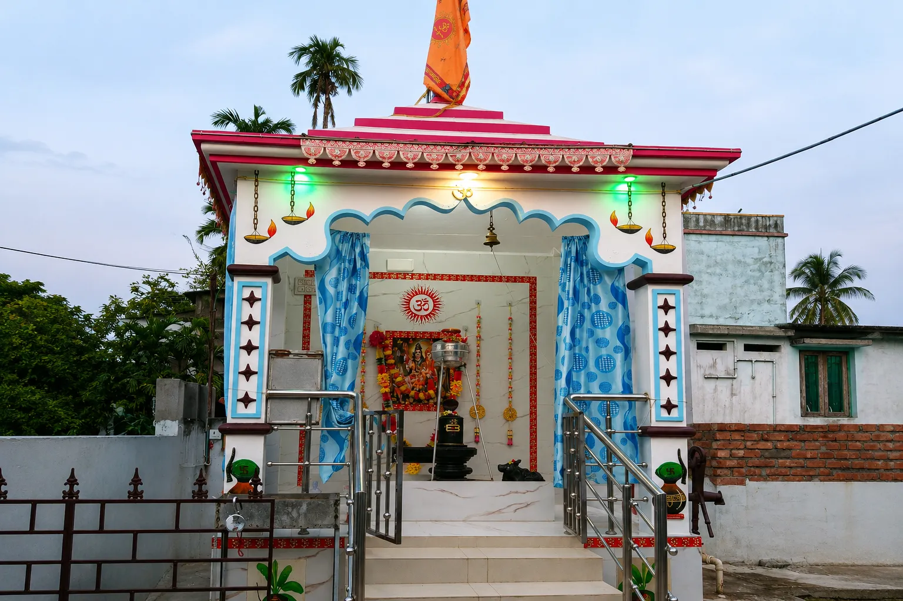
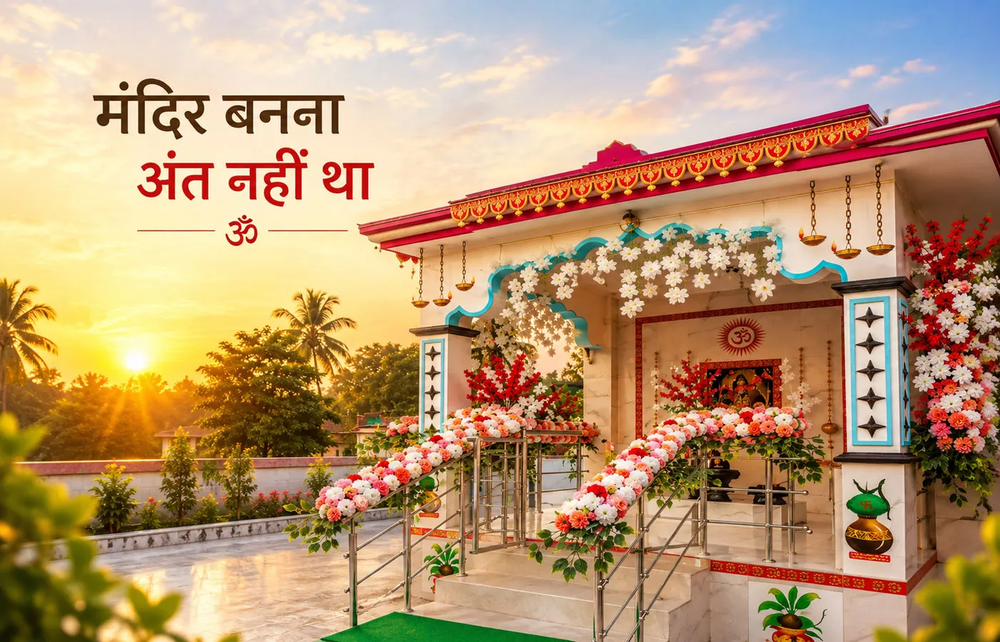
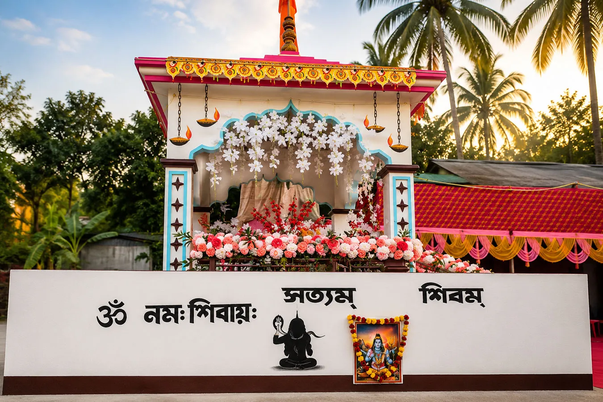
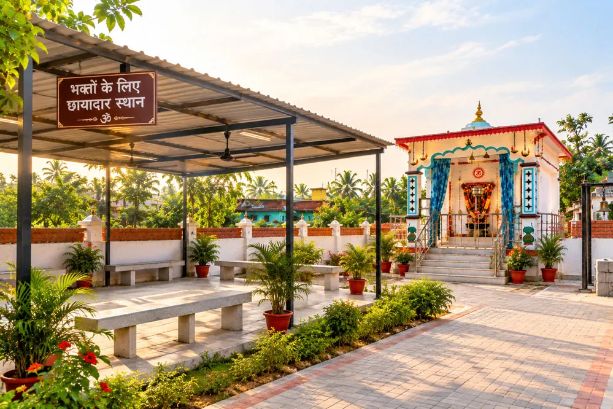
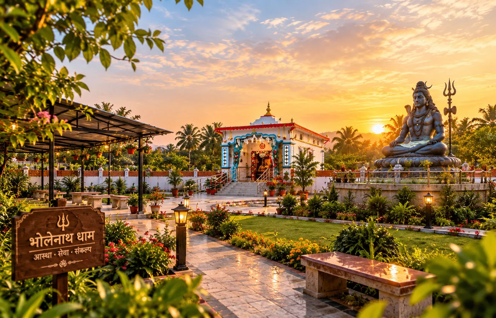
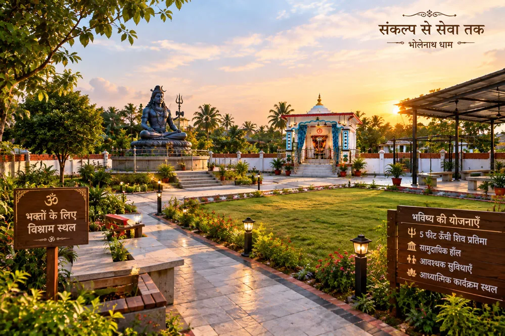
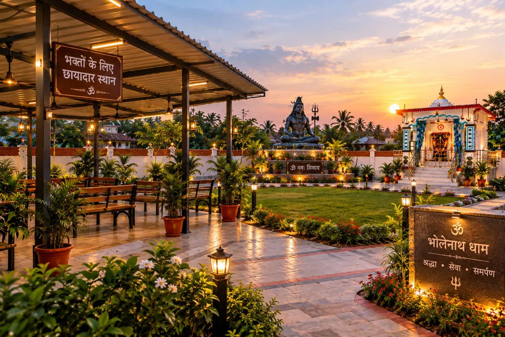
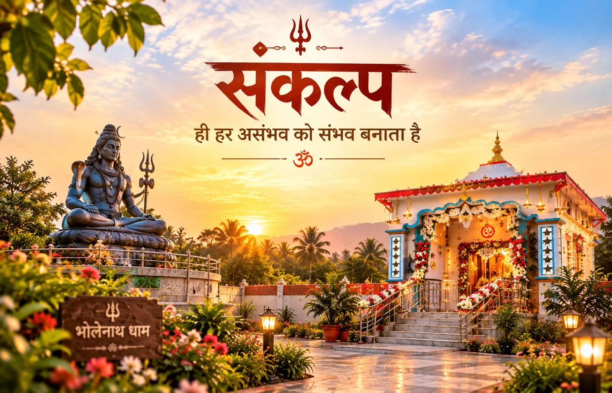
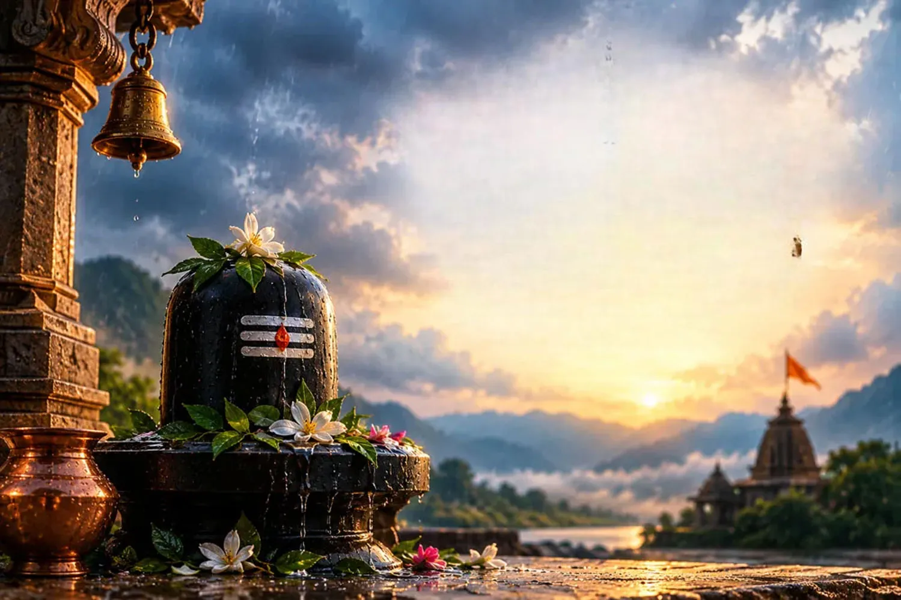

वह दिन जब सपना सामने दिखाई देने लगा

एक समय था जब यह सब केवल एक कल्पना थी। फिर भूमि से जुड़ा प्रयास शुरू हुआ। परिस्थितियाँ हमेशा सरल नहीं थीं। रास्ते में कई चरण आए, कई इंतजार आए और कई ऐसे क्षण भी आए जब केवल विश्वास ही आगे बढ़ने की शक्ति देता था।
लेकिन धीरे-धीरे वह दिन आया जब भगवान शिव के मंदिर का निर्माण वास्तव में शुरू हुआ। 10 नवंबर 2025 को निर्माण कार्य प्रारंभ हुआ। फिर 28 जनवरी 2026 को निर्माण पूरा हुआ।
और उसके बाद 15 फरवरी 2026 को भोलेनाथ धाम के लिए वह विशेष दिन आया, जब मंदिर का उद्घाटन हुआ। श्रद्धालु एकत्र हुए और 300 से अधिक भक्तों ने उस पावन अवसर पर अपनी उपस्थिति दर्ज की। उस दिन शायद सबसे अधिक यही महसूस हुआ होगा कि जिस संकल्प को कभी केवल मन में देखा था, वह अब सामने खड़ा है।
लेकिन मंदिर बनना अंत नहीं था

अक्सर हम किसी मंदिर को देखते हैं तो हमारी दृष्टि उसके शिखर, गर्भगृह और भगवान के स्वरूप तक सीमित रह जाती है। लेकिन एक मंदिर के साथ एक पूरा वातावरण भी जुड़ा होता है।
वहाँ आने वाला हर व्यक्ति एक अलग आवश्यकता लेकर आता है। कोई दर्शन करने आता है। कोई प्रार्थना करने आता है। कोई अपने परिवार के साथ आता है। कोई दूर से चलकर आता है। और कोई केवल कुछ क्षण भगवान शिव के पास बैठकर अपने मन को शांत करना चाहता है।
इसलिए मंदिर बन जाने के बाद अगली जिम्मेदारी थी, परिसर को भी धीरे-धीरे भक्तों के लिए बेहतर बनाना।
6 फीट की बाउंड्री - सुरक्षा की एक नई शुरुआत

मंदिर परिसर की 6 फीट ऊँची बाउंड्री का निर्माण पूरा हो चुका है। बाहर से देखने पर यह शायद केवल एक निर्माण कार्य दिखाई दे।
लेकिन इसके पीछे एक बहुत साधारण भावना है, मंदिर परिसर सुरक्षित और व्यवस्थित रहे। जिस स्थान को इतने प्रेम और संकल्प से बनाया गया है, उसकी देखभाल भी उसी भावना से हो।
यह दीवार उस यात्रा का एक और पड़ाव है।
धूप और बारिश के बीच भक्तों के लिए एक छाया

भारत में मौसम भी अपनी कहानी खुद लिखता है। गर्मियों में तेज धूप। बरसात में अचानक वर्षा। और ऐसे समय में मंदिर आने वाले भक्तों के लिए कुछ देर बैठने या रुकने का स्थान कितना महत्वपूर्ण हो सकता है, इसे वही व्यक्ति समझ सकता है जो स्वयं ऐसी परिस्थिति से गुजरा हो।
इसीलिए परिसर में भक्तों के लिए छायादार स्थान का निर्माण किया गया है। अब कोई भक्त धूप या बारिश से बचने के लिए कुछ समय वहाँ रुक सकता है।
यह कोई बहुत बड़ा निर्माण नहीं है। लेकिन सेवा हमेशा बड़ी दिखाई दे, यह आवश्यक नहीं। कभी-कभी किसी भक्त को धूप से बचाने के लिए बनाई गई एक छत भी सेवा का बहुत सुंदर रूप होती है।
और अब सामने है अगला प्रश्न…
मंदिर बन गया। बाउंड्री बन गई। भक्तों के लिए छायादार स्थान भी तैयार हो गया। तो क्या अब यात्रा समाप्त हो गई?
नहीं। यहीं से एक नया प्रश्न जन्म लेता है-अब इस धाम को आगे कैसे विकसित किया जाए?
मंदिर के परिसर में लगभग 1,000 वर्गफुट भूमि अभी शेष है। यही शेष भूमि भविष्य के अगले चरण की आधारभूमि बन सकती है।
खाली भूमि नहीं… एक भविष्य की संभावना

आज यदि कोई उस स्थान को देखे तो शायद उसे केवल एक खाली जगह दिखाई दे। लेकिन किसी संकल्प को देखने वाली दृष्टि थोड़ी अलग होती है।
वहाँ एक ऐसी जगह की कल्पना की जा सकती है जहाँ आने वाले समय में भक्तों के लिए और सुविधाएँ विकसित हों। जहाँ धार्मिक और आध्यात्मिक कार्यक्रम आयोजित किए जा सकें। जहाँ लोग एक साथ बैठ सकें। जहाँ आवश्यकता के समय समुदाय के लिए उपयोगी गतिविधियाँ हो सकें।
और जहाँ भगवान शिव की उपस्थिति केवल मंदिर तक सीमित न रहकर पूरे वातावरण में अनुभव की जा सके।
अगले चरण का संकल्प

भविष्य की कल्पना में कई कार्य शामिल हैं।
भगवान शिव की 5 फीट ऊँची प्रतिमा स्थापित करना भी भोलेनाथ धाम के अगले संकल्पों में शामिल है। कल्पना कीजिए-मंदिर में दर्शन के बाद भक्त कुछ क्षण उस प्रतिमा के पास बैठें, शिव का स्मरण करें, अपने मन की बात कहें और कुछ पल के लिए संसार की भागदौड़ से दूर हो जाएँ।
शेष भूमि के विकास की कल्पना में सामुदायिक हॉल भी शामिल है। ऐसी जगह जहाँ धार्मिक कार्यक्रम, आध्यात्मिक आयोजन और सामुदायिक गतिविधियाँ भविष्य में आयोजित की जा सकें। मंदिर केवल पूजा का स्थान नहीं होता। वह लोगों को जोड़ने का माध्यम भी बन सकता है।
आने वाले समय में आवश्यक शौचालय एवं अन्य सुविधाओं का विकास भी इस चरण का हिस्सा है। क्योंकि किसी धाम को सुंदर बनाने के साथ-साथ उसे व्यावहारिक और भक्तों के लिए सुविधाजनक बनाना भी उतना ही आवश्यक है।
यह सब एक साथ नहीं होगा
यह बात हम स्पष्ट रूप से कहना चाहते हैं। ये सभी योजनाएँ एक दिन में पूरी नहीं होंगी। और शायद ऐसा होना भी जरूरी नहीं है।
क्योंकि भोलेनाथ धाम की यात्रा हमें यही सिखाती है कि एक बड़ा संकल्प छोटे-छोटे कदमों से ही पूरा होता है।
पहले भूमि। • फिर मंदिर। • फिर निर्माण। • फिर उद्घाटन। • फिर बाउंड्री। • फिर भक्तों के लिए छाया। • और अब-अगले चरण की तैयारी।
हर कदम अपने समय पर। हर कार्य अपनी आवश्यकता के अनुसार। और हर उपलब्धि के पीछे भगवान शिव के प्रति वही श्रद्धा।
शायद यही इस यात्रा की सबसे सुंदर बात है
जब कोई कार्य पूरा हो जाता है, तो हम अक्सर उसकी अंतिम तस्वीर देखते हैं। लेकिन उस तस्वीर के पीछे की यात्रा बहुत लंबी होती है। बहुत से छोटे प्रयास। बहुत से इंतजार। बहुत से निर्णय। और बहुत से ऐसे क्षण जिन्हें केवल वही लोग जानते हैं जो उस यात्रा का हिस्सा रहे हैं।
भोलेनाथ धाम भी आज केवल एक निर्मित मंदिर नहीं है। यह उन सभी छोटे-बड़े प्रयासों का परिणाम है जिन्होंने एक संकल्प को वास्तविकता में बदला। और अब शेष भूमि हमें एक नई संभावना की ओर देख रही है।
आज का मंदिर, कल का विस्तृत धाम

आज यहाँ भगवान शिव का मंदिर है। कल शायद इसी परिसर में एक सुंदर शिव प्रतिमा हो, भक्तों के बैठने और एकत्र होने के लिए बेहतर स्थान हो, सामुदायिक और आध्यात्मिक कार्यक्रमों के लिए व्यवस्था हो, आवश्यक सुविधाएँ हों और एक ऐसा वातावरण हो जहाँ आने वाला व्यक्ति कुछ देर के लिए अपने भीतर की शांति को महसूस कर सके।
यह केवल भवन बनाने की कल्पना नहीं है। यह एक ऐसा वातावरण बनाने की कल्पना है जहाँ श्रद्धा और सेवा साथ-साथ चलें।
और इस कहानी में सबसे महत्वपूर्ण शब्द है - “संकल्प”

संकल्प का अर्थ यह नहीं कि हर चीज तुरंत मिल जाए। संकल्प का अर्थ है, रास्ता कठिन हो तब भी दिशा न बदलना।
आज मंदिर खड़ा है। यह स्वयं इस बात का प्रमाण है कि एक विचार धीरे-धीरे वास्तविकता बन सकता है। इसीलिए भविष्य को लेकर भी विश्वास है।
जो कार्य आज संभव दिखाई देता है, उसे आज किया जाएगा। जो कार्य कल संभव होगा, उसे कल किया जाएगा। लेकिन यात्रा रुकेगी नहीं।
इस कहानी का अगला पृष्ठ अभी खाली है
शायद यही इस पूरे अध्याय का सबसे सुंदर हिस्सा है। अगला पृष्ठ अभी लिखा जाना बाकी है। उस पर क्या लिखा जाएगा? कब लिखा जाएगा? किस रूप में लिखा जाएगा? समय बताएगा।
लेकिन इतना निश्चित है कि भोलेनाथ धाम की यात्रा यहाँ समाप्त नहीं होती। मंदिर बन चुका है। लेकिन सेवा का मार्ग लंबा है। परिसर बन चुका है। लेकिन उसे और उपयोगी बनाने की यात्रा बाकी है। भूमि का एक हिस्सा विकसित हो चुका है। लेकिन शेष भूमि में अभी भविष्य की अनेक संभावनाएँ हैं।
और सबसे बड़ी बात-संकल्प अभी जीवित है।
भोलेनाथ धाम - एक मंदिर से आगे

हम चाहते हैं कि भोलेनाथ धाम केवल भगवान शिव के दर्शन का स्थान न रहे। यह ऐसा स्थान बने जहाँ श्रद्धा हो। सेवा हो। शांति हो। सामुदायिक भावना हो। और आने वाला प्रत्येक भक्त अपने साथ एक सकारात्मक अनुभव लेकर लौटे।
यह यात्रा किसी एक दिन में पूरी नहीं होगी। शायद वर्षों लगें। शायद कई छोटे-बड़े चरण आएँ। लेकिन हर बार जब इस परिसर में कोई नया कार्य पूरा होगा, वह इस कहानी में एक नया पृष्ठ जोड़ देगा।
अंत में… संकल्प अभी बाकी है
और तब शायद एक दिन हम पीछे मुड़कर देखेंगे और कहेंगे, जिस दिन हमने शुरुआत की थी, उस दिन हमें पता नहीं था कि यह संकल्प हमें इतनी दूर तक ले जाएगा।
आज मंदिर सामने है। कल की कल्पना सामने है। और बीच में है, भोलेनाथ पर विश्वास
हर हर महादेव
संकल्प अभी बाकी है
मंदिर बन चुका है। लेकिन सेवा, विकास और भविष्य की नई जिम्मेदारियों की यात्रा अभी जारी है। हर छोटा कदम भोलेनाथ धाम की कहानी में एक नया पृष्ठ जोड़ता रहेगा।